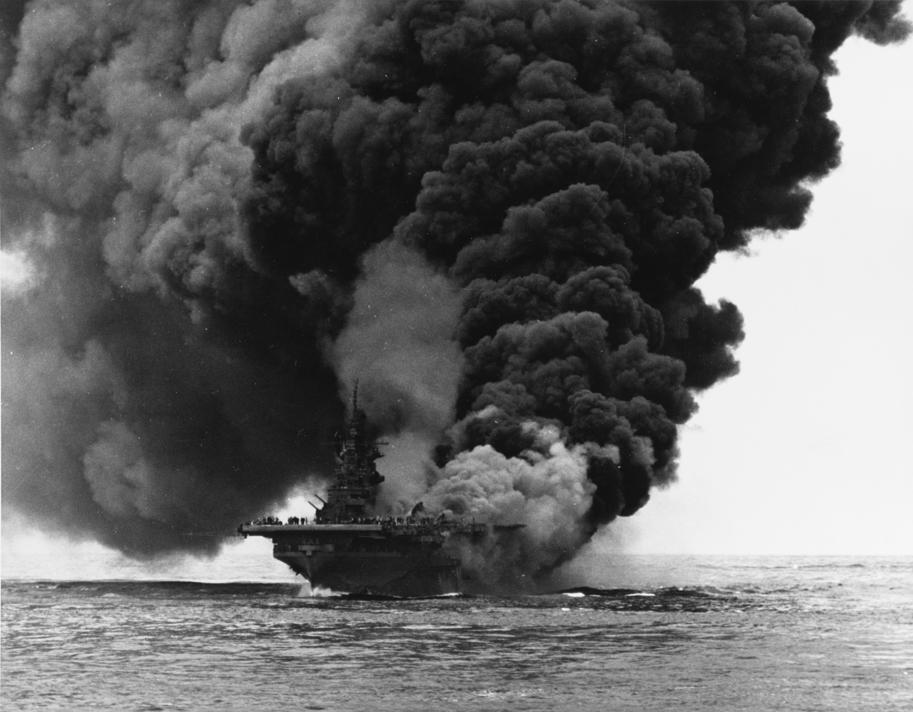

Directions: Study the photograph and the background, then answer the questions.

Background. The battle for Okinawa ran from April to June 1945. American forces took the island as the base for invading Japan. Japan answered in part from the air, sending pilots on deliberate crash attacks against the fleet offshore, in organized waves across the whole battle. The Bunker Hill, in the photograph, was hit on May 11, 1945, and burned, but did not sink. The battle cost about 12,500 American dead, above 100,000 Japanese military dead, and heavy Okinawan civilian deaths.
1. What kind of attack has hit the Bunker Hill in the photograph? Use the lesson word, and define it.
2. Three years before this photograph, the Pacific war turned at sea. Name the June 1942 battle, state what American carrier aircraft did there, and name the two Japanese losses that could not be replaced at American speed.
3. The advance that reached Okinawa did not attack every island Japan held. Name the strategy, and explain why a bypassed garrison was defeated without a battle.
4. American planners in 1945 read Okinawa as a preview. A preview of what, and which two figures from the background made them read it that way?
1. What kind of attack has hit the Bunker Hill? A kamikaze attack. A kamikaze is a Japanese pilot who made a deliberate crash attack on an enemy ship; the word also names the attack itself. Credit requires the term and the deliberate crash, not only bombing. (Blueprint 10)
2. Name the June 1942 battle and its two irreplaceable Japanese losses. The Battle of Midway, the naval battle of June 1942 in which American carrier aircraft sank four Japanese carriers and ended Japan's ability to take the offensive in the Pacific. The two losses were the four fleet carriers and their trained carrier pilots, neither replaceable at the speed of American shipyards and training schools. (Blueprint 9)
3. Name the strategy, and why a bypassed garrison was defeated. Island hopping, the Allied Pacific strategy of seizing selected islands for airfields while bypassing strong Japanese garrisons and cutting them off from supply. Cut off, a garrison could not be fed, reinforced, or moved, and could not strike the advance that had passed it, so it was out of the war without a landing. (Blueprint 9)
4. A preview of what, on which figures? A preview of invading Japan itself. Okinawa cost about 12,500 American dead and above 100,000 Japanese military dead, with heavy civilian deaths, on one island sixty miles long. Japan's home islands held a far larger army and population, defended the same way, so planners expected every figure to multiply. Any two of the three figures earn the figure credit. (Blueprint 10)
Teacher note. This check is formative. Question 1 is the observation diagnostic. Students who write bombing have missed the kamikaze as a distinct weapon and should be sent back to the reading's final section. Question 4 predicts success on the writing task, because it requires the preview argument stated from figures.